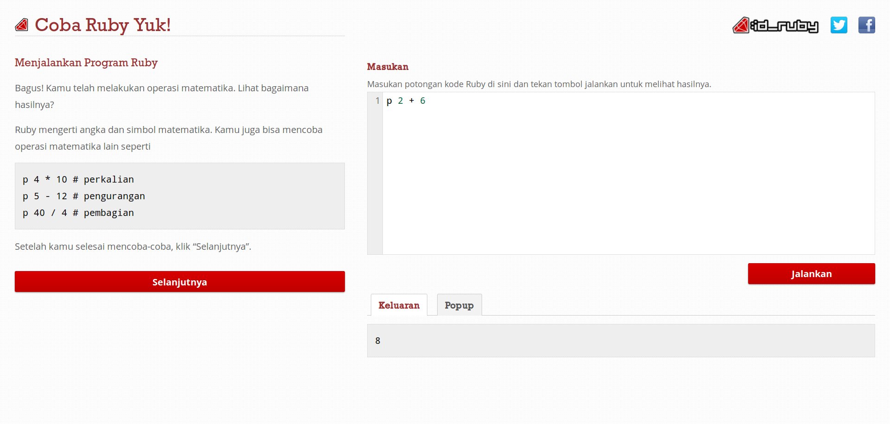
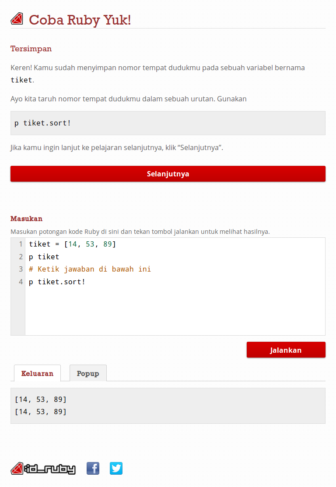

Coba Ruby
Coba Ruby is the Indonesian version of Try Ruby. An initiative from id Ruby to attract more Indonesians to learn Ruby.
I was tasked to design and develop the front-end for Coba Ruby. As this is intended for learning, the user interface needs to be simple, clear, and easy to understand.
Large Screen Size

Medium Screen Size
